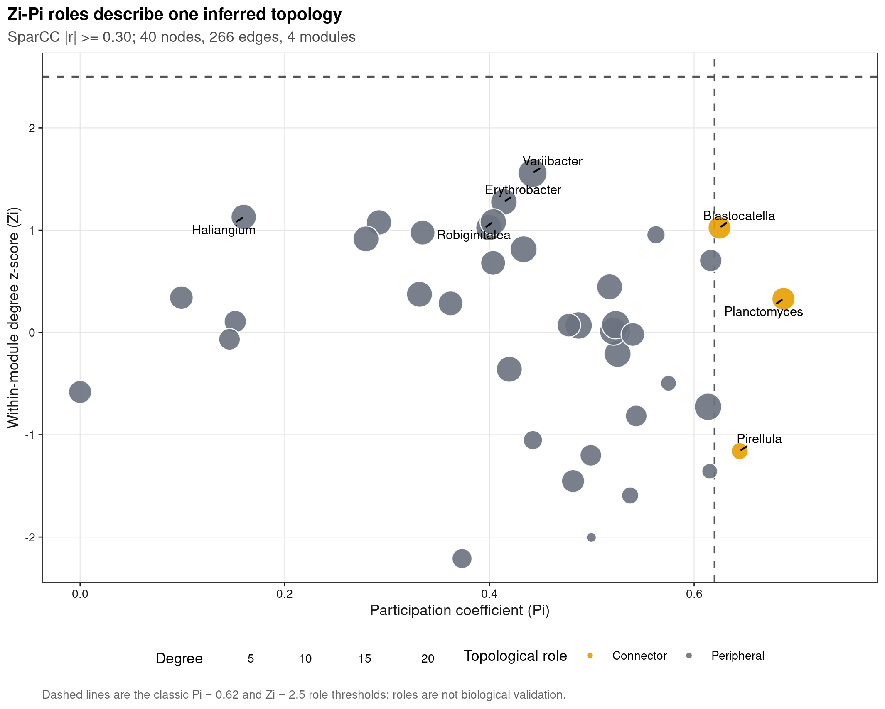
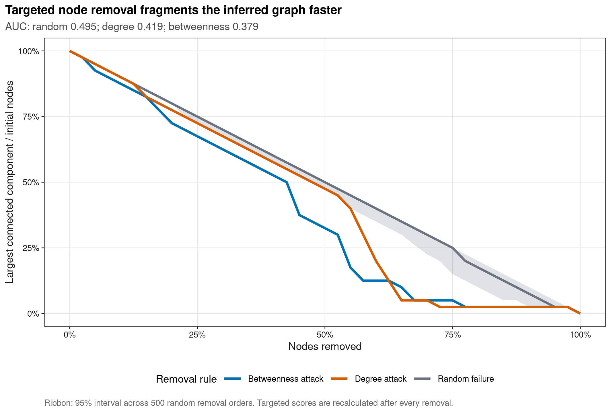
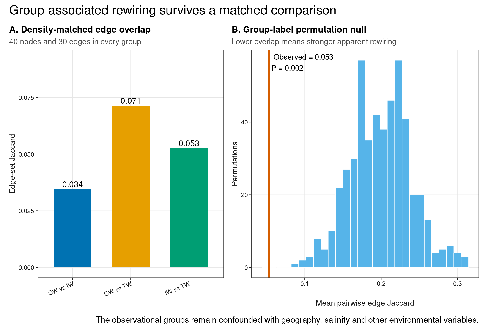
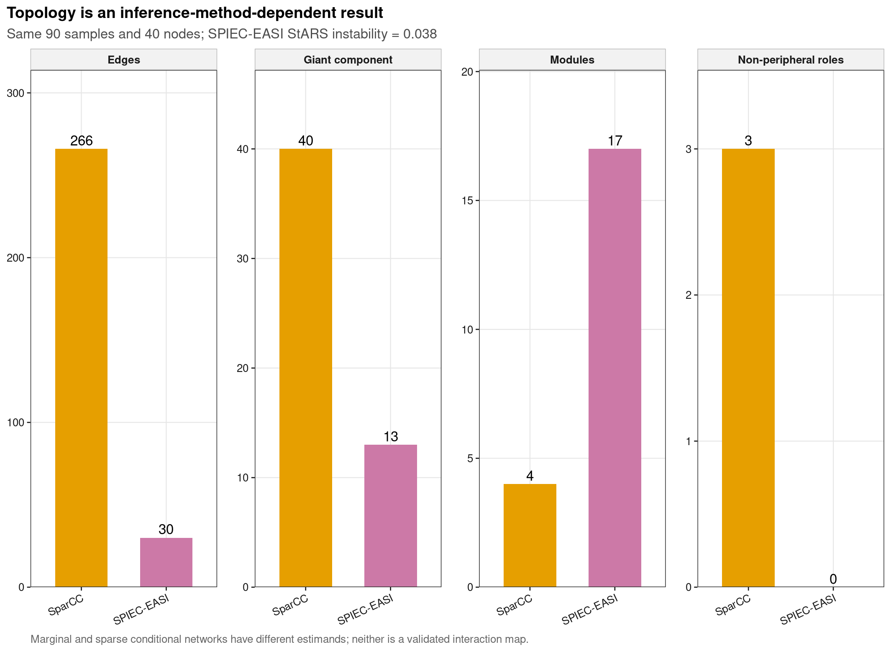

options(timeout = 600)
data_url <- "https://raw.githubusercontent.com/petemeng/microbiome-best-practices/3cb6a817e0c73ab7ecbec1cedc1ad80cbb9ecfaa/"
input_files <- c(
"data/small/metadata.tsv",
"data/small/otutab.tsv",
"data/small/taxonomy.tsv"
)
for (path in input_files) {
dir.create(dirname(path), recursive = TRUE, showWarnings = FALSE)
if (!file.exists(path)) download.file(paste0(data_url, path), path, mode = "wb", quiet = TRUE)
}网络进阶：鲁棒性、拓扑角色与组间比较
网络差异必须先证明推断过程可比
Guimerà & Amaral (2005)用 within-module degree 与 participation coefficient 建立网络角色图；Yuan et al. (2021)把网络复杂度与稳定性用于土壤微生物群落比较。以下分析在公开湿地 16S 数据上同时检查 role cartography、node-attack curve、group rewiring null distribution 和方法敏感性。
重要先给结论
Zi–Pi、degree 和节点移除曲线描述的是推断网络的拓扑，不是一个 taxon 在真实生态系统中的必要性。只有先固定节点集合、edge inference、密度和不确定性，组间拓扑才可比较；即使满足这些条件，“candidate topological keystone”仍需扰动实验、时间序列或机制证据验证。
本页使用 microeco 2.0.0 的真实湿地三件套，CW、IW、TW 各 30 个样本。所有 feature 筛选在看分组网络前一次完成；SparCC 与 SPIEC-EASI 都读取同一个 90 × 40 count matrix。组间网络使用同样 40 个节点并强制保留相同边数，避免把 node count 或 density 差异误写成生态稳定性差异。
固定边数之后，比较的问题发生了什么变化？
相同节点数和边数让拓扑比较更容易解释，但此时问的是“在相同连接预算下，边怎样分布”，不是“哪个群落真实连接更多”。弱证据组也会被保留同样多的边，因此还要看入选边的强度与重采样稳定性。可以同时展示未经密度匹配的估计及其不确定性，但不能把两种分析的结论混为一谈。
本例的节点移除发生在一张估计图上，剩余边不会像真实群落那样重新适应。LCC 衰减较慢只说明这张图在指定删除规则下较难断开，不说明宿主功能更稳定或群落恢复更快。Zi–Pi 角色也依赖模块划分；换算法或重新抽样后角色不稳定的节点，更适合称为候选结构位置，而不是已验证的关键菌。
下载并读取本次分析的数据
需要 R，以及 SpiecEasi、ggplot2、ggrepel、igraph、knitr、patchwork、ragg、scales、svglite。本次使用中国湿地的 OTU count 表、分类表和样本信息表。
在一个新建的文件夹中运行以下代码，下载文件后按文中的顺序继续分析：
library(ggplot2)
library(SpiecEasi)
set.seed(20260736)
font_pub <- "sans"
pal_pub <- c(
blue = "#0072B2", orange = "#E69F00", green = "#009E73",
vermillion = "#D55E00", purple = "#CC79A7", sky = "#56B4E9",
yellow = "#F0E442", grey = "#6B7280"
)
scale_color_pub <- function(..., values = unname(pal_pub)) {
ggplot2::scale_color_manual(..., values = values)
}
scale_fill_pub <- function(..., values = unname(pal_pub)) {
ggplot2::scale_fill_manual(..., values = values)
}
theme_pub <- function(base_size = 10, base_family = font_pub) {
ggplot2::theme_bw(base_size = base_size, base_family = base_family) +
ggplot2::theme(
panel.grid.minor = ggplot2::element_blank(),
panel.grid.major = ggplot2::element_line(
colour = "#E6E6E6", linewidth = 0.25
),
axis.text = ggplot2::element_text(colour = "#1A1A1A"),
axis.title = ggplot2::element_text(colour = "#1A1A1A"),
axis.ticks = ggplot2::element_line(colour = "#1A1A1A", linewidth = 0.3),
plot.title.position = "plot",
plot.title = ggplot2::element_text(face = "bold", size = ggplot2::rel(1.15)),
plot.subtitle = ggplot2::element_text(colour = "#4D4D4D"),
plot.caption = ggplot2::element_text(colour = "#666666", hjust = 0),
strip.background = ggplot2::element_rect(
fill = "#F2F2F2", colour = "#B3B3B3", linewidth = 0.3
),
strip.text = ggplot2::element_text(face = "bold"),
legend.key = ggplot2::element_blank(), legend.position = "top"
)
}
save_pub <- function(
plot, file_base, width = 89, height = 70, units = "mm",
dpi = 600, write_svg = TRUE, write_tiff = TRUE,
base_family = font_pub
) {
dir.create(dirname(file_base), recursive = TRUE, showWarnings = FALSE)
ggplot2::ggsave(
paste0(file_base, ".pdf"), plot, width = width, height = height,
units = units, device = grDevices::cairo_pdf,
family = base_family, bg = "white"
)
if (write_svg) ggplot2::ggsave(
paste0(file_base, ".svg"), plot, width = width, height = height,
units = units, device = svglite::svglite, bg = "white"
)
ggplot2::ggsave(
paste0(file_base, ".png"), plot, width = width, height = height,
units = units, dpi = dpi, device = ragg::agg_png, bg = "white"
)
if (write_tiff) ggplot2::ggsave(
paste0(file_base, ".tiff"), plot, width = width, height = height,
units = units, dpi = dpi, device = ragg::agg_tiff,
compression = "lzw", bg = "white"
)
invisible(plot)
}从三件套中确定用于比较的 40 个节点
read_keyed_tsv <- function(path) {
x <- readr::read_tsv(
path, show_col_types = FALSE, progress = FALSE,
name_repair = "minimal", na = character()
)
ids <- as.character(x[[1L]])
stopifnot(!anyDuplicated(ids))
out <- as.data.frame(x[-1L], check.names = FALSE)
rownames(out) <- ids
out
}
otutab_raw <- read_keyed_tsv("data/small/otutab.tsv")
taxonomy <- read_keyed_tsv("data/small/taxonomy.tsv")
metadata <- read_keyed_tsv("data/small/metadata.tsv")
otutab <- as.matrix(data.frame(
lapply(otutab_raw, as.integer), check.names = FALSE
))
rownames(otutab) <- rownames(otutab_raw)
metadata$Group <- factor(metadata$Group, levels = c("CW", "IW", "TW"))
rank_names <- c(
"Kingdom", "Phylum", "Class", "Order", "Family", "Genus", "Species"
)
clean_taxon <- function(x) {
x <- sub("^[A-Za-z]__", "", trimws(as.character(x)))
x[
is.na(x) | x == "" |
grepl(
"unclassified|unknown|unassigned|uncultured|metagenome",
x, ignore.case = TRUE
)
] <- NA_character_
x
}
taxonomy_clean <- as.data.frame(
lapply(taxonomy[rownames(otutab), rank_names], clean_taxon),
check.names = FALSE
)
known_genus <- !is.na(taxonomy_clean$Genus)
lineage_key <- apply(
taxonomy_clean[known_genus, rank_names[1:6], drop = FALSE], 1L,
function(x) paste(ifelse(is.na(x), "?", x), collapse = ";")
)
genus_counts <- rowsum(
otutab[known_genus, , drop = FALSE], lineage_key, reorder = FALSE
)
lineage_matrix <- do.call(
rbind, strsplit(rownames(genus_counts), ";", fixed = TRUE)
)
colnames(lineage_matrix) <- rank_names[1:6]
display_taxon <- lineage_matrix[, "Genus"]
feature_ids <- make.unique(paste0("Genus:", display_taxon))
rownames(genus_counts) <- feature_ids
feature_info_all <- data.frame(
FeatureID = feature_ids,
as.data.frame(lineage_matrix, stringsAsFactors = FALSE),
DisplayTaxon = display_taxon,
stringsAsFactors = FALSE,
row.names = feature_ids,
check.names = FALSE
)
prevalence <- rowMeans(genus_counts > 0)
total_reads <- rowSums(genus_counts)
eligible <- prevalence >= 0.20 & total_reads >= 100
selection_score <- prevalence * log1p(total_reads)
selected_ids <- names(sort(selection_score[eligible], decreasing = TRUE))[1:40]
counts <- genus_counts[selected_ids, , drop = FALSE]
feature_info <- feature_info_all[selected_ids, , drop = FALSE]
sample_by_taxon <- t(counts)
stopifnot(
nrow(otutab) == 13628L,
ncol(otutab) == 90L,
sum(otutab) == 1619670L,
identical(rownames(sample_by_taxon), rownames(metadata)),
ncol(sample_by_taxon) == 40L,
all(rowMeans(counts > 0) >= 0.20),
all(rowSums(counts) >= 100L)
)
data.frame(
Samples = nrow(sample_by_taxon),
Nodes = ncol(sample_by_taxon),
CW = sum(metadata$Group == "CW"),
IW = sum(metadata$Group == "IW"),
TW = sum(metadata$Group == "TW"),
RetainedReadFraction = sum(counts) / sum(otutab)
) Samples Nodes CW IW TW RetainedReadFraction
1 90 40 30 30 30 0.1987849下载完整 R 脚本。脚本包含数据下载、计算和图形导出。
首次使用时安装 R 包
install.packages(c(
"ggplot2", "ggrepel", "igraph", "patchwork", "ragg", "readr",
"remotes", "scales", "svglite", "systemfonts"
))
remotes::install_github(
"zdk123/SpiecEasi@c463727",
upgrade = "never"
)拓扑角色、鲁棒性和组间差异是三个问题
Zi 与 Pi 先问“节点连到哪里”
对节点 \(i\)，within-module degree z-score 为
\[ Z_i = \frac{k_{i,s}-\bar{k}_s}{\sigma_{k_s}}, \]
其中 \(k_{i,s}\) 是节点连向自身模块 \(s\) 的加权 degree。Participation coefficient 为
\[ P_i = 1 - \sum_s \left(\frac{k_{i,s}}{k_i}\right)^2. \]
经典阈值把 \(Z_i>2.5\) 视为 hub、\(P_i>0.62\) 视为 connector。阈值来自复杂网络角色分类，不是微生物 keystone 的生物学验证标准；模块算法、edge threshold 或 association method 一变，角色也可能改变。
节点移除曲线回答“这张图怎样断开”
本页从初始最大连通分量开始，逐步删除节点并记录剩余 largest connected component（LCC）比例：
- Random failure：500 个随机删除顺序，报告中位数与 95% 区间；
- Degree attack：每一步重新计算 degree，删除当前最高者；
- Betweenness attack：每一步重新计算 betweenness，删除当前最高者。
曲线下面积越小，表示该推断图在这种删除规则下更快碎裂。它不能自动等同于群落抗扰性、功能稳定性或恢复力。
组间网络必须控制比较基线
不同组的样本量、节点数和 edge density 会系统性改变 modularity、clustering 和 path length。本页三组均为 30 个样本，使用同一 40-node universe，并把每组 CLR-Spearman 网络截取为与 pooled SPIEC-EASI 相同的 edge count。然后用 499 次 group-label permutation 检验平均 pairwise edge Jaccard 是否异常低，再用每组 500 次 sample bootstrap 记录 edge selection frequency。
“网络差异”仍可能是环境差异
CW、IW、TW 同时对应不同地理与盐度环境，不是随机处理。显著 rewiring 只表示网络结构与这些观测分组关联，不能拆成盐度、空间、土壤性质或真实互作变化的单独效应。
深入：为什么这里同时保留 SparCC 与 SPIEC-EASI
SparCC 给较稠密的 marginal association network，适合展示模块角色和 attack curve；SPIEC-EASI 给 sparse conditional association network。若两者产生的 component 数、giant component 和 role count 差别很大，这个差别本身就是拓扑结论不稳的证据，而不是挑一张更漂亮的图隐藏掉。
在可比条件下检查网络角色与鲁棒性
独立推断 SparCC 与 SPIEC-EASI 网络
set.seed(20260736)
sparcc_cor <- SpiecEasi::sparcc(sample_by_taxon)$Cor
dimnames(sparcc_cor) <- list(selected_ids, selected_ids)
pair_index <- which(upper.tri(sparcc_cor), arr.ind = TRUE)
sparcc_pairs <- data.frame(
From = rownames(sparcc_cor)[pair_index[, "row"]],
To = colnames(sparcc_cor)[pair_index[, "col"]],
Association = sparcc_cor[pair_index],
stringsAsFactors = FALSE
)
sparcc_pairs$Selected <- abs(sparcc_pairs$Association) >= 0.30
# Non-parametric sample bootstrap audits threshold and sign stability.
sparcc_bootstrap_replicates <- 100L
set.seed(20260736)
bootstrap_indices <- replicate(
sparcc_bootstrap_replicates,
sample(seq_len(nrow(sample_by_taxon)), replace = TRUE),
simplify = FALSE
)
bootstrap_association <- vapply(
bootstrap_indices,
function(index) {
fit <- SpiecEasi::sparcc(sample_by_taxon[index, , drop = FALSE])$Cor
fit[upper.tri(fit)]
},
numeric(nrow(sparcc_pairs))
)
sparcc_pairs$SelectionFrequency <- rowMeans(abs(bootstrap_association) >= 0.30)
sparcc_pairs$SignConsistency <- rowMeans(
sign(bootstrap_association) == sign(sparcc_pairs$Association)
)
sparcc_edges <- sparcc_pairs[sparcc_pairs$Selected, , drop = FALSE]
set.seed(20260736)
spiec_fit <- SpiecEasi::spiec.easi(
sample_by_taxon,
method = "mb",
lambda.min.ratio = 1e-2,
nlambda = 20,
pulsar.params = list(rep.num = 50, seed = 20260736L),
verbose = FALSE
)
spiec_adjacency <- as.matrix(SpiecEasi::getRefit(spiec_fit))
spiec_beta <- as.matrix(SpiecEasi::symBeta(
SpiecEasi::getOptBeta(spiec_fit), mode = "maxabs"
))
dimnames(spiec_adjacency) <- dimnames(spiec_beta) <- list(
selected_ids, selected_ids
)
spiec_index <- which(
upper.tri(spiec_adjacency) & spiec_adjacency != 0,
arr.ind = TRUE
)
spiec_edges <- data.frame(
From = rownames(spiec_adjacency)[spiec_index[, "row"]],
To = colnames(spiec_adjacency)[spiec_index[, "col"]],
Association = spiec_beta[spiec_index],
stringsAsFactors = FALSE
)
spiec_instability <- as.numeric(SpiecEasi::getStability(spiec_fit))
make_graph <- function(edges) {
graph <- igraph::graph_from_data_frame(
edges[, c("From", "To", "Association")],
directed = FALSE,
vertices = data.frame(
name = selected_ids,
DisplayTaxon = feature_info[selected_ids, "DisplayTaxon"],
stringsAsFactors = FALSE
)
)
graph <- igraph::set_edge_attr(
graph, "weight_abs", value = abs(igraph::E(graph)$Association)
)
graph
}
sparcc_graph <- make_graph(sparcc_edges)
spiec_graph <- make_graph(spiec_edges)
stopifnot(
nrow(sparcc_pairs) == choose(40L, 2L),
nrow(sparcc_edges) >= 20L,
nrow(spiec_edges) >= 5L,
spiec_instability <= 0.05,
all(sparcc_pairs$SelectionFrequency >= 0 & sparcc_pairs$SelectionFrequency <= 1),
all(sparcc_pairs$SignConsistency >= 0 & sparcc_pairs$SignConsistency <= 1)
)计算 Zi–Pi，并比较不同推断方法下的节点角色
calculate_roles <- function(graph, method) {
set.seed(20260736)
modules <- igraph::cluster_louvain(
graph, weights = igraph::E(graph)$weight_abs
)
membership <- igraph::membership(modules)
weight_matrix <- as.matrix(igraph::as_adjacency_matrix(
graph, attr = "weight_abs", sparse = FALSE
))
zi <- pi <- numeric(igraph::vcount(graph))
names(zi) <- names(pi) <- igraph::V(graph)$name
module_ids <- sort(unique(membership))
for (node in igraph::V(graph)$name) {
own_module <- membership[[node]]
own_nodes <- names(membership)[membership == own_module]
within_degree <- rowSums(
weight_matrix[own_nodes, own_nodes, drop = FALSE]
)
zi[[node]] <- if (length(own_nodes) > 1L && stats::sd(within_degree) > 0) {
(sum(weight_matrix[node, own_nodes]) - mean(within_degree)) /
stats::sd(within_degree)
} else {
0
}
total_degree <- sum(weight_matrix[node, ])
by_module <- vapply(
module_ids,
function(module_id) sum(
weight_matrix[node, names(membership)[membership == module_id]]
),
numeric(1)
)
pi[[node]] <- if (total_degree > 0) {
1 - sum((by_module / total_degree)^2)
} else {
0
}
}
out <- data.frame(
FeatureID = names(zi),
DisplayTaxon = igraph::vertex_attr(
graph, "DisplayTaxon", index = names(zi)
),
Method = method,
Module = unname(membership[names(zi)]),
Degree = unname(igraph::degree(graph)[names(zi)]),
Strength = unname(igraph::strength(
graph, vids = names(zi), weights = igraph::E(graph)$weight_abs
)),
Zi = unname(zi),
Pi = unname(pi),
stringsAsFactors = FALSE
)
out$Role <- with(
out,
ifelse(
Zi > 2.5 & Pi > 0.62, "Network hub",
ifelse(
Zi > 2.5, "Module hub",
ifelse(Pi > 0.62, "Connector", "Peripheral")
)
)
)
attr(out, "modularity") <- igraph::modularity(modules)
out
}
sparcc_roles <- calculate_roles(sparcc_graph, "SparCC")
spiec_roles <- calculate_roles(spiec_graph, "SPIEC-EASI")
all_roles <- rbind(sparcc_roles, spiec_roles)
incident_stability <- vapply(
sparcc_roles$FeatureID,
function(node) {
values <- sparcc_edges$SelectionFrequency[
sparcc_edges$From == node | sparcc_edges$To == node
]
if (length(values)) stats::median(values) else 0
},
numeric(1)
)
sparcc_roles$MedianIncidentStability <- incident_stability
sparcc_roles$TopologicalCandidate <- with(
sparcc_roles,
Role != "Peripheral" & MedianIncidentStability >= 0.70
)
role_summary <- as.data.frame(
table(all_roles$Method, all_roles$Role), stringsAsFactors = FALSE
)
names(role_summary) <- c("Method", "Role", "Nodes")
role_summary <- role_summary[role_summary$Nodes > 0, ]
role_summary Method Role Nodes
1 SparCC Connector 3
3 SparCC Peripheral 37
4 SPIEC-EASI Peripheral 40自适应 node attack 与曲线下面积
giant_component <- function(graph) {
component <- igraph::components(graph)
igraph::induced_subgraph(
graph,
igraph::V(graph)[component$membership == which.max(component$csize)]
)
}
largest_component_fraction <- function(graph, initial_n) {
if (igraph::vcount(graph) == 0L) return(0)
max(igraph::components(graph)$csize) / initial_n
}
adaptive_attack <- function(graph, strategy) {
graph <- giant_component(graph)
initial_n <- igraph::vcount(graph)
result <- data.frame(
RemovedFraction = seq(0, 1, length.out = initial_n + 1L),
LCCFraction = numeric(initial_n + 1L),
Strategy = strategy,
stringsAsFactors = FALSE
)
result$LCCFraction[[1L]] <- 1
for (step in seq_len(initial_n)) {
score <- if (strategy == "Degree attack") {
igraph::degree(graph)
} else {
igraph::betweenness(
graph, directed = FALSE, normalized = FALSE, weights = NA
)
}
victim <- names(sort(score, decreasing = TRUE))[1L]
graph <- igraph::delete_vertices(graph, victim)
result$LCCFraction[[step + 1L]] <- largest_component_fraction(
graph, initial_n
)
}
result
}
random_attacks <- function(graph, replicates = 500L) {
graph <- giant_component(graph)
initial_n <- igraph::vcount(graph)
set.seed(20260736)
curves <- vapply(
seq_len(replicates),
function(replicate_id) {
order <- sample(igraph::V(graph)$name)
working <- graph
curve <- numeric(initial_n + 1L)
curve[[1L]] <- 1
for (step in seq_along(order)) {
working <- igraph::delete_vertices(working, order[[step]])
curve[[step + 1L]] <- largest_component_fraction(
working, initial_n
)
}
curve
},
numeric(initial_n + 1L)
)
data.frame(
RemovedFraction = seq(0, 1, length.out = initial_n + 1L),
Median = apply(curves, 1L, stats::median),
Lower = apply(curves, 1L, stats::quantile, probs = 0.025),
Upper = apply(curves, 1L, stats::quantile, probs = 0.975),
stringsAsFactors = FALSE
)
}
curve_auc <- function(y) mean((head(y, -1L) + tail(y, -1L)) / 2)
sparcc_degree_attack <- adaptive_attack(sparcc_graph, "Degree attack")
sparcc_betweenness_attack <- adaptive_attack(
sparcc_graph, "Betweenness attack"
)
sparcc_random_attack <- random_attacks(sparcc_graph, replicates = 500L)
network_attack_summary <- function(graph, method) {
degree_curve <- adaptive_attack(graph, "Degree attack")
betweenness_curve <- adaptive_attack(graph, "Betweenness attack")
random_curve <- random_attacks(graph, replicates = 500L)
data.frame(
Method = method,
InitialGiantNodes = igraph::vcount(giant_component(graph)),
RandomAUC = curve_auc(random_curve$Median),
DegreeAttackAUC = curve_auc(degree_curve$LCCFraction),
BetweennessAttackAUC = curve_auc(betweenness_curve$LCCFraction),
stringsAsFactors = FALSE
)
}
attack_summary <- rbind(
network_attack_summary(sparcc_graph, "SparCC"),
network_attack_summary(spiec_graph, "SPIEC-EASI")
)
attack_summary Method InitialGiantNodes RandomAUC DegreeAttackAUC BetweennessAttackAUC
1 SparCC 40 0.4950000 0.4193750 0.3793750
2 SPIEC-EASI 13 0.3047337 0.2337278 0.1863905Density-matched 组间网络、置换和 bootstrap
clr <- log2(sample_by_taxon + 0.5)
clr <- clr - rowMeans(clr)
edge_keys <- apply(
utils::combn(colnames(clr), 2L), 2L,
function(x) paste(x, collapse = " || ")
)
group_edge_count <- nrow(spiec_edges)
select_group_edges <- function(rows, edge_count = group_edge_count) {
correlation <- stats::cor(
clr[rows, , drop = FALSE], method = "spearman"
)
values <- correlation[upper.tri(correlation)]
edge_keys[order(abs(values), decreasing = TRUE)[seq_len(edge_count)]]
}
jaccard <- function(a, b) length(intersect(a, b)) / length(union(a, b))
group_names <- levels(metadata$Group)
group_edge_sets <- setNames(
lapply(group_names, function(group_name) {
select_group_edges(metadata$Group == group_name)
}),
group_names
)
group_pairs <- utils::combn(group_names, 2L)
group_jaccard <- data.frame(
Comparison = apply(group_pairs, 2L, paste, collapse = " vs "),
Jaccard = apply(group_pairs, 2L, function(x) {
jaccard(group_edge_sets[[x[[1L]]]], group_edge_sets[[x[[2L]]]])
}),
stringsAsFactors = FALSE
)
observed_mean_jaccard <- mean(group_jaccard$Jaccard)
set.seed(20260736)
permuted_mean_jaccard <- replicate(499L, {
permuted_group <- sample(metadata$Group)
permuted_sets <- lapply(group_names, function(group_name) {
select_group_edges(permuted_group == group_name)
})
mean(apply(utils::combn(seq_along(group_names), 2L), 2L, function(x) {
jaccard(permuted_sets[[x[[1L]]]], permuted_sets[[x[[2L]]]])
}))
})
rewiring_p <- (
1 + sum(permuted_mean_jaccard <= observed_mean_jaccard)
) / 500
set.seed(20260736)
group_bootstrap_frequency <- lapply(group_names, function(group_name) {
rows <- which(metadata$Group == group_name)
selected <- replicate(
500L,
select_group_edges(sample(rows, replace = TRUE)),
simplify = FALSE
)
frequency <- table(unlist(selected, use.names = FALSE)) / 500
data.frame(
Group = group_name,
EdgeKey = names(frequency),
SelectionFrequency = as.numeric(frequency),
stringsAsFactors = FALSE
)
})
group_bootstrap_frequency <- do.call(rbind, group_bootstrap_frequency)
stable_group_edges <- aggregate(
SelectionFrequency ~ Group,
data = group_bootstrap_frequency,
FUN = function(x) sum(x >= 0.70)
)
names(stable_group_edges)[[2L]] <- "StableEdges"
stopifnot(
all(vapply(group_edge_sets, length, integer(1)) == group_edge_count),
rewiring_p >= 1 / 500 && rewiring_p <= 1,
all(stable_group_edges$StableEdges <= group_edge_count)
)
data.frame(
MeanPairwiseJaccard = observed_mean_jaccard,
PermutationP = rewiring_p,
NullMedian = stats::median(permuted_mean_jaccard),
NullLower = stats::quantile(permuted_mean_jaccard, 0.025),
NullUpper = stats::quantile(permuted_mean_jaccard, 0.975)
) MeanPairwiseJaccard PermutationP NullMedian NullLower NullUpper
2.5% 0.05284764 0.002 0.2003201 0.1207792 0.2840179组间网络比较必须统一推断条件
network_robustness_audit <- data.frame(
Dimension = c(
"Node universe", "Edge density", "Edge uncertainty", "Role threshold",
"Attack curve", "Group comparison", "Keystone claim"
),
FragilePractice = c(
"Select taxa separately by group",
"Compare raw topology at different densities",
"Treat one thresholded edge set as fixed",
"Use Zi/Pi labels as biological truth",
"Equate graph fragmentation with resilience",
"Read rewiring as treatment effect",
"Call the highest-degree node a keystone"
),
UpgradedContract = c(
"One group-blind 40-node set",
"Same samples per group and same edge count",
"Sample bootstrap selection frequency",
"Report method-dependent role ledger",
"State graph-only estimand and attack rule",
"Permutation plus design/confounding boundary",
"Candidate label plus perturbation requirement"
),
stringsAsFactors = FALSE
)
knitr::kable(
network_robustness_audit,
caption = "Audit contract for advanced microbial-network claims"
)| Dimension | FragilePractice | UpgradedContract |
|---|---|---|
| Node universe | Select taxa separately by group | One group-blind 40-node set |
| Edge density | Compare raw topology at different densities | Same samples per group and same edge count |
| Edge uncertainty | Treat one thresholded edge set as fixed | Sample bootstrap selection frequency |
| Role threshold | Use Zi/Pi labels as biological truth | Report method-dependent role ledger |
| Attack curve | Equate graph fragmentation with resilience | State graph-only estimand and attack rule |
| Group comparison | Read rewiring as treatment effect | Permutation plus design/confounding boundary |
| Keystone claim | Call the highest-degree node a keystone | Candidate label plus perturbation requirement |
当前数据中，SparCC 网络有 266 条边，SPIEC-EASI 有 30 条边；二者最大连通分量分别为 40 与 13 个节点。SparCC role map 中有 3 个非 peripheral 节点，而 SPIEC-EASI 中有 0 个。这个结果说明 Zi–Pi 角色首先依赖推断图，不能脱离 method/threshold ledger 报告。
三组 density-matched 网络的平均 edge Jaccard 为 0.053；499 次标签置换的 lower-tail p-value 为 0.002。这是 group-associated rewiring 证据，但 CW/IW/TW 与空间、盐度和多项环境因子共同变化，因此不是盐度或地理因素的单独效应。
检查拓扑结论是否依赖密度和删除策略
图 1：Zi–Pi role cartography
role_colours <- c(
"Peripheral" = pal_pub[["grey"]],
"Connector" = pal_pub[["orange"]],
"Module hub" = pal_pub[["blue"]],
"Network hub" = pal_pub[["vermillion"]]
)
label_roles <- sparcc_roles[
sparcc_roles$Role != "Peripheral" |
rank(-sparcc_roles$Zi, ties.method = "first") <= 4L,
]
role_plot <- ggplot(
sparcc_roles,
aes(x = Pi, y = Zi, fill = Role, size = Degree)
) +
geom_vline(xintercept = 0.62, linetype = 2, colour = "#555555") +
geom_hline(yintercept = 2.5, linetype = 2, colour = "#555555") +
geom_point(shape = 21, colour = "white", stroke = 0.45, alpha = 0.9) +
ggrepel::geom_text_repel(
data = label_roles,
aes(label = DisplayTaxon),
family = font_pub, size = 2.6, min.segment.length = 0,
max.overlaps = Inf, show.legend = FALSE
) +
scale_fill_manual(values = role_colours, drop = FALSE) +
scale_size_continuous(range = c(2.4, 7.5)) +
coord_cartesian(xlim = c(0, max(0.72, max(sparcc_roles$Pi) * 1.08))) +
labs(
title = "Zi-Pi roles describe one inferred topology",
subtitle = sprintf(
"SparCC |r| >= 0.30; %d nodes, %d edges, %d modules",
igraph::vcount(sparcc_graph), igraph::ecount(sparcc_graph),
length(unique(sparcc_roles$Module))
),
x = "Participation coefficient (Pi)",
y = "Within-module degree z-score (Zi)",
fill = "Topological role", size = "Degree",
caption = "Dashed lines are the classic Pi = 0.62 and Zi = 2.5 role thresholds; roles are not biological validation."
) +
theme_pub(base_size = 8.5) +
theme(legend.position = "bottom")
save_pub(role_plot, "figures/36-role-cartography", width = 180, height = 145)
role_plot
图 2：比较随机删除与自适应定向删除节点的影响
attack_lines <- rbind(
transform(
sparcc_degree_attack[, c("RemovedFraction", "LCCFraction")],
Strategy = "Degree attack"
),
transform(
sparcc_betweenness_attack[, c("RemovedFraction", "LCCFraction")],
Strategy = "Betweenness attack"
)
)
attack_colours <- c(
"Random failure" = pal_pub[["grey"]],
"Degree attack" = pal_pub[["vermillion"]],
"Betweenness attack" = pal_pub[["blue"]]
)
attack_plot <- ggplot() +
geom_ribbon(
data = sparcc_random_attack,
aes(x = RemovedFraction, ymin = Lower, ymax = Upper),
fill = pal_pub[["grey"]], alpha = 0.20
) +
geom_line(
data = sparcc_random_attack,
aes(x = RemovedFraction, y = Median, colour = "Random failure"),
linewidth = 0.9
) +
geom_line(
data = attack_lines,
aes(x = RemovedFraction, y = LCCFraction, colour = Strategy),
linewidth = 0.95
) +
scale_colour_manual(values = attack_colours) +
scale_x_continuous(labels = scales::label_percent()) +
scale_y_continuous(labels = scales::label_percent(), limits = c(0, 1)) +
labs(
title = "Targeted node removal fragments the inferred graph faster",
subtitle = sprintf(
"AUC: random %.3f; degree %.3f; betweenness %.3f",
attack_summary$RandomAUC[attack_summary$Method == "SparCC"],
attack_summary$DegreeAttackAUC[attack_summary$Method == "SparCC"],
attack_summary$BetweennessAttackAUC[attack_summary$Method == "SparCC"]
),
x = "Nodes removed", y = "Largest connected component / initial nodes",
colour = "Removal rule",
caption = "Ribbon: 95% interval across 500 random removal orders. Targeted scores are recalculated after every removal."
) +
theme_pub(base_size = 8.8) +
theme(legend.position = "bottom")
save_pub(
attack_plot, "figures/36-attack-robustness", width = 180, height = 122
)
attack_plot
图 3：用置换检验判断组间网络差异
group_jaccard$Comparison <- factor(
group_jaccard$Comparison, levels = group_jaccard$Comparison
)
jaccard_panel <- ggplot(
group_jaccard,
aes(x = Comparison, y = Jaccard, fill = Comparison)
) +
geom_col(width = 0.65, show.legend = FALSE) +
geom_text(
aes(label = sprintf("%.3f", Jaccard)),
vjust = -0.35, family = font_pub, size = 3
) +
scale_fill_manual(values = unname(pal_pub[c("blue", "orange", "green")])) +
scale_y_continuous(limits = c(0, max(group_jaccard$Jaccard) * 1.28)) +
labs(
title = "A. Density-matched edge overlap",
subtitle = sprintf("%d nodes and %d edges in every group", 40L, group_edge_count),
x = NULL, y = "Edge-set Jaccard"
) +
theme_pub(base_size = 8.1) +
theme(axis.text.x = element_text(angle = 22, hjust = 1))
permutation_data <- data.frame(MeanJaccard = permuted_mean_jaccard)
null_panel <- ggplot(permutation_data, aes(x = MeanJaccard)) +
geom_histogram(
bins = 28, fill = pal_pub[["sky"]], colour = "white", linewidth = 0.25
) +
geom_vline(
xintercept = observed_mean_jaccard,
colour = pal_pub[["vermillion"]], linewidth = 1.05
) +
annotate(
"text", x = observed_mean_jaccard, y = Inf,
label = sprintf("Observed = %.3f\nP = %.3f", observed_mean_jaccard, rewiring_p),
hjust = -0.08, vjust = 1.25, family = font_pub, size = 2.8
) +
labs(
title = "B. Group-label permutation null",
subtitle = "Lower overlap means stronger apparent rewiring",
x = "Mean pairwise edge Jaccard", y = "Permutations"
) +
theme_pub(base_size = 8.1)
group_rewiring_plot <- patchwork::wrap_plots(
jaccard_panel, null_panel, nrow = 1L, widths = c(0.9, 1.1)
) +
patchwork::plot_annotation(
title = "Group-associated rewiring survives a matched comparison",
caption = "The observational groups remain confounded with geography, salinity and other environmental variables."
)
save_pub(
group_rewiring_plot, "figures/36-group-rewiring",
width = 180, height = 122
)
group_rewiring_plot
图 4：检查推断方法对网络结构和稳健性的影响
topology_metrics <- data.frame(
Method = rep(c("SparCC", "SPIEC-EASI"), each = 4L),
Metric = rep(
c("Edges", "Giant component", "Modules", "Non-peripheral roles"),
times = 2L
),
Value = c(
igraph::ecount(sparcc_graph),
max(igraph::components(sparcc_graph)$csize),
length(unique(sparcc_roles$Module)),
sum(sparcc_roles$Role != "Peripheral"),
igraph::ecount(spiec_graph),
max(igraph::components(spiec_graph)$csize),
length(unique(spiec_roles$Module)),
sum(spiec_roles$Role != "Peripheral")
),
stringsAsFactors = FALSE
)
topology_metrics$Metric <- factor(
topology_metrics$Metric,
levels = c("Edges", "Giant component", "Modules", "Non-peripheral roles")
)
topology_panel <- ggplot(
topology_metrics,
aes(x = Method, y = Value, fill = Method)
) +
geom_col(width = 0.62, show.legend = FALSE) +
geom_text(
aes(label = Value), vjust = -0.35, family = font_pub, size = 2.8
) +
facet_wrap(~Metric, scales = "free_y", nrow = 1L) +
scale_fill_manual(values = c(
"SparCC" = pal_pub[["orange"]],
"SPIEC-EASI" = pal_pub[["purple"]]
)) +
scale_y_continuous(expand = expansion(mult = c(0, 0.18))) +
labs(
title = "Topology is an inference-method-dependent result",
subtitle = sprintf(
"Same 90 samples and 40 nodes; SPIEC-EASI StARS instability = %.3f",
spiec_instability
),
x = NULL, y = NULL,
caption = "Marginal and sparse conditional networks have different estimands; neither is a validated interaction map."
) +
theme_pub(base_size = 7.8) +
theme(
axis.text.x = element_text(angle = 25, hjust = 1),
panel.spacing.x = grid::unit(4, "mm")
)
save_pub(
topology_panel, "figures/36-topology-sensitivity",
width = 180, height = 132
)
topology_panel
result_dir <- "results/36-network-robustness"
dir.create(result_dir, recursive = TRUE, showWarnings = FALSE)
utils::write.table(
sparcc_roles,
file.path(result_dir, "sparcc-node-roles.tsv"),
sep = "\t", quote = FALSE, row.names = FALSE
)
utils::write.table(
attack_summary,
file.path(result_dir, "attack-summary.tsv"),
sep = "\t", quote = FALSE, row.names = FALSE
)
utils::write.table(
group_jaccard,
file.path(result_dir, "group-edge-jaccard.tsv"),
sep = "\t", quote = FALSE, row.names = FALSE
)
utils::write.table(
group_bootstrap_frequency,
file.path(result_dir, "group-edge-bootstrap.tsv"),
sep = "\t", quote = FALSE, row.names = FALSE
)
expected_bases <- c(
"figures/36-role-cartography",
"figures/36-attack-robustness",
"figures/36-group-rewiring",
"figures/36-topology-sensitivity"
)
expected_files <- as.vector(outer(
expected_bases, c(".pdf", ".svg", ".png", ".tiff"), paste0
))
stopifnot(
all(file.exists(expected_files)),
sparcc_bootstrap_replicates == 100L,
nrow(sparcc_pairs) == 780L,
all(vapply(group_edge_sets, length, integer(1)) == group_edge_count),
spiec_instability <= 0.05,
rewiring_p >= 1 / 500,
all(is.finite(attack_summary$RandomAUC))
)
注意常见坑：审稿人会追问的七件事
- 把 connector/hub 直接写成 keystone：改写为 candidate topological role，并给 edge stability 与外部验证计划。
- 各组单独筛 taxa：节点集合不同后，degree、density 与 modularity 无法直接比较。
- 网络密度不一致：先做 density-matched comparison，再提供原始模型网络作为敏感性。
- 固定删除顺序：degree 与 betweenness 应在每次删除后重新计算。
- 只画 random attack 均值：至少报告重复次数、95% 区间和 AUC。
- 忽略 edge selection uncertainty：bootstrap frequency 低的边不能支撑稳定角色。
- 把分组 rewiring 写成单一环境因果：观测组与空间/理化变量混杂时只能报告 association。
报告网络比较与鲁棒性的方法与限制
Genus-level counts were filtered independently of group labels (prevalence ≥20% and total abundance ≥100 reads), and the 40 highest prespecified prevalence–abundance scores were retained. A SparCC association graph was defined at |r| ≥0.30 and audited with 100 non-parametric sample bootstraps. A sparse conditional network was independently estimated using SPIEC-EASI neighbourhood selection (20 lambda values and 50 StARS subsamples). Louvain modules were calculated from absolute edge weights, and node roles were summarized using within-module degree z-score and participation coefficient; these labels were interpreted as topology-dependent candidates rather than validated keystone taxa. Robustness was assessed on the initial giant component using 500 random node-removal sequences and adaptive degree- and betweenness-targeted removal. Group-specific CLR-Spearman networks used the same 40 nodes, 30 samples per group and a density matched to the pooled SPIEC-EASI graph. Mean pairwise edge Jaccard was evaluated using 499 label permutations, and edge selection frequencies were estimated with 500 within-group sample bootstraps. Random seeds were fixed at 20260736.
将网络比较与鲁棒性用于自己的研究
otutab <- read_keyed_tsv("your_data/otutab.tsv")
taxonomy <- read_keyed_tsv("your_data/taxonomy.tsv")
metadata <- read_keyed_tsv("your_data/metadata.tsv")
# 必改：真实分组列；每组应有足够独立生物学重复。
metadata$Group <- factor(metadata$YourGroupColumn)
# 投稿前预先固定，不要根据网络图反复调参：
prevalence_cutoff <- 0.20
total_read_cutoff <- 100L
node_count <- 40L
association_cutoff <- 0.30
group_edge_count <- 30L若各组样本量不同，应先做相同样本量的 repeated subsampling sensitivity；若存在 subject、site、time、batch 或 treatment pairing，group-label permutation 必须服从相应 exchangeability block。真正的 keystone 验证还需要删除/补加实验、培养、纵向动态或机制证据，而不是再换一种 centrality。
参考
- Guimerà R, Nunes Amaral LA. Functional cartography of complex metabolic networks. Nature. 2005;433:895–900. https://doi.org/10.1038/nature03288
- Yuan MM, Guo X, Wu L, et al. Climate warming enhances microbial network complexity and stability. Nature Climate Change. 2021;11:343–348. https://doi.org/10.1038/s41558-021-00989-9
- Friedman J, Alm EJ. Inferring correlation networks from genomic survey data. PLOS Computational Biology. 2012;8:e1002687. https://doi.org/10.1371/journal.pcbi.1002687
- Kurtz ZD, Müller CL, Miraldi ER, et al. Sparse and compositionally robust inference of microbial ecological networks. PLOS Computational Biology. 2015;11:e1004226. https://doi.org/10.1371/journal.pcbi.1004226
- Barberán A, Bates ST, Casamayor EO, Fierer N. Using network analysis to explore co-occurrence patterns in soil microbial communities. ISME Journal. 2012;6:343–351. https://doi.org/10.1038/ismej.2011.119
- An J, Liu C, Wang Q, et al. Soil bacterial community structure in Chinese wetlands. Geoderma. 2019;337:290–299. https://doi.org/10.1016/j.geoderma.2018.09.035
- Liu C, Cui Y, Li X, Yao M. microeco: an R package for data mining in microbial community ecology. FEMS Microbiology Ecology. 2021;97:fiaa255. https://doi.org/10.1093/femsec/fiaa255